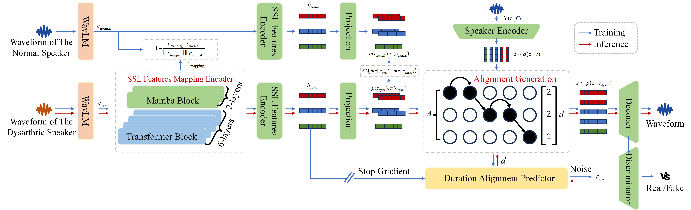

In this demo page, we report audio demos generated by VIDSR on the UASpeech.
Abstract
Dysarthric speech reconstruction (DSR) aims to enhance the intelligibility of dysarthric speech, which is challenging due to the significant acoustic space differences between dysarthric and normal speech. The dysarthric speech is characterized by its long-range dependencies and non-stationary features, including discontinuous pronunciation, slow speech, and improper pauses during the pronunciation. Current research on DSR task, primarily based on voice conversion, depends on specialized encoders, complex auxiliary strategies, and text annotations. In this paper, we propose a DSR model named Text-free Alignment and Regularization via Variational Autoencoder (TAR-VAE), which leverages self-supervised learning (SSL) features alignment and regularization mechanisms within a conditional variational autoencoder with Adversarial Learning for Dysarthric speech reconstruction. TAR-VAE employs a SSL Features Mapping Encoder to align dysarthric and normal speech SSL features by capturing both local dynamics and global dependencies. To further reduce the distributional gap between dysarthric and normal speech, a Dysarthric Regularization Mechanism is introduced, which ensures that the prior distributions inferred from dysarthric speech closely match the parallel normal speech. Additionally, a Duration Alignment Predictor is developed to model long-range temporal patterns, aligning the durations of dysarthric speech with natural prosody. Experimental results on the benchmark UASpeech corpus demonstrate that TAR-VAE achieves state-of-the-art performance, thoroughly validating the effectiveness and advancements of the proposed method in dysarthric speech reconstruction.
Diagram and example of TAR-VAE
System Comparison
- Original: Original dysarthric speech.
- Reference: Healthy speech from control speaker CF02.
- ASR-TTS: A two-stage ASR-TTS system, transcribes dysarthric speech using a multilingual HuBERT-CTC model and then synthesizes normal speech via Tacotron 2 and a HiFi-GAN vocoder.
- E2E-DSR: A three-stage knowledge distillation framework, where a seq2seq TTS model is first trained on normal speech, then used to guide a speech encoder via cross-modal distillation, and finally combined to directly convert dysarthric speech into intelligible speech.
- ASA-DSR: A multi-task learning strategy that fine-tunes the speaker encoder to capture target speaker identity while using adversarial training to ensure reconstructed speech matches the distribution of high-quality reference speech.
- Unit-DSR: A multi-stage training approach that leverages the domain adaptation capabilities of HuBERT to enhance training efficiency and utilizes discrete speech units to constrain the restoration of dysarthric speech content within a discrete linguistic space.